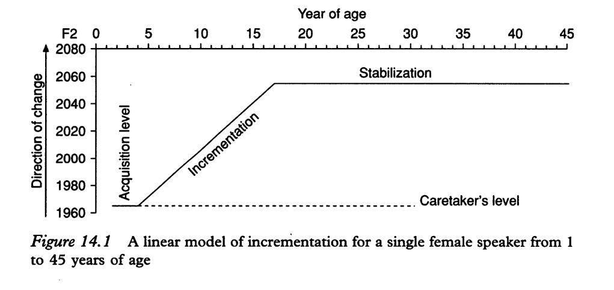
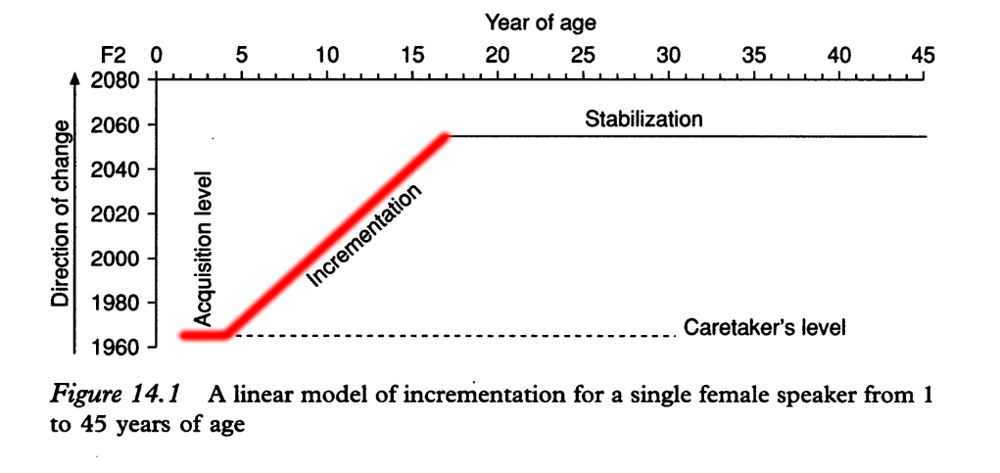
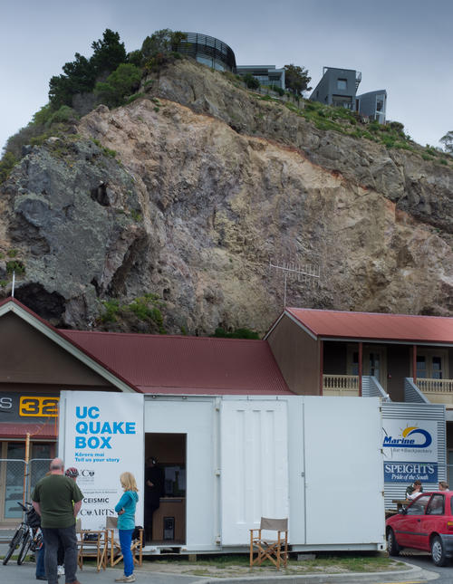
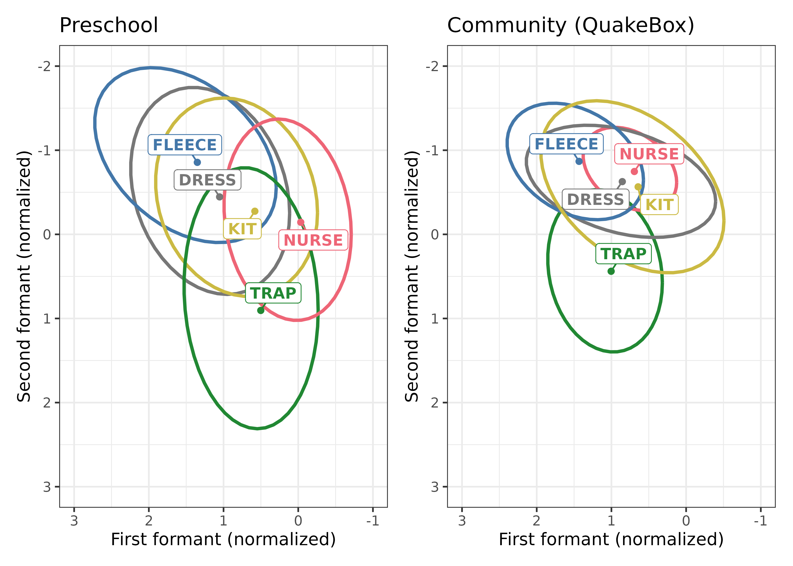
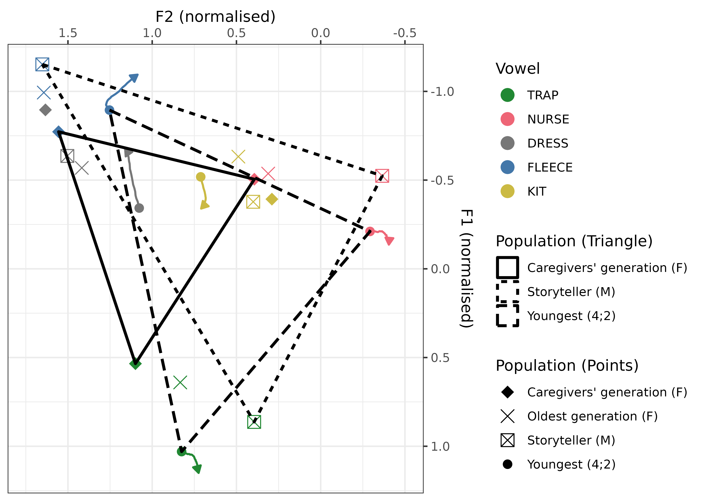

Exploring vernacular reorganisation in a longitudinal corpus of pre-schoolers’ speech
Overview
Overview
- Background and Research Questions
- Data
- Analysis
- Results
- Interpretation
The Team

Background
Vernacular reorganisation
[…] we necessarily begin with the phonetics, phonology, morphology, and syntax that we acquired from our first caretaker, normally female. The general condition for linguistic change can then be stated in a very simple way: children must learn to talk differently from their mothers. Let us refer to this process as vernacular re-organization. (Labov 2001, 415)
We investigate the onset of vernacular reorganisation.
Vernacular reorganisation


Transmission: Acquire caregiver’s vernacular.
Incrementation: Advance linguistic changes underway in the community.
Trigger: shift from caregiver-dominated norms to peer-dominated norms around 4-5 (usually at school).
Research Questions
- Is there evidence of vernacular reorganisation in the speech of preschool aged children?
- Are all changing accent features advanced at the same time and at the same rate during incrementation?
Data
Story Retell
Source: the UC Child Well-Being Research Institute’s Better Start Literacy Approach | Te Ara Reo Matatini.
Children were presented with a story and asked to retell it in their own words.
Two stories were used: Hana and the Tūī and Tama and the Playground (Gillon, McNeill, and Scott 2019).
Both stories were written by the CWRI to match the NZ cultural context and contain a wide variety of literacy-relevant linguistic features (Gillon et al. 2023; Scott et al. 2022).
Tell:
Retell:
Preschooler corpus
- 18 centres
- 132 children
- F: 76, M: 65
- 60 with two recordings
- 19 with three recordings
- 2 with four recordings
Preschooler corpus
- 101 NZ European
- 19 Māori
- 2 Pasifika
- 6 Asian
- 4 Other
- Age at recording: 3;11 - 5;5
- Median age: 4;6
Preschooler corpus
- dress: 968 (F1), 961 (F2)
- fleece: 1150 (F1), 1159 (F2)
- kit: 1888 (F1), 1848 (F2)
- nurse 444 (F1), 447 (F2)
- trap 987 (F1), 963 (F2)
QuakeBox

- 431 single-speaker recordings
- Prompt: “tell us your earthquake story”.
- Recorded across a range of sites in Christchurch in 2011-2012.
- Our community baseline (caregivers: F 18-35, Oldest generation: F 76+)
- High quality audio and video recordings.
Analysis
Preprocessing
- Transcription from CWRI.
- Correction of timestamps.
- Forced alignment (see Fromont 2023).
- Formant tracking (via FastTrack (Barreda 2021) with manual checking).
- Normalisation
- Watch out: Kids data raises many problems — be careful! ⚠️
- See supplementary materials of full paper.
Modelling Approach
- We don’t have all the data we need to directly test core hypotheses
- …so we go exploratory.
- We want to discern an onset in sound change
- …so we use GAMMs.
- Data is sparse and model convergence difficult
- …so we adopt a Bayesian approach (via
brms: Bürkner 2017)
- …so we adopt a Bayesian approach (via
Model structure
For dress, fleece, kit, nurse, and trap (the ‘extended short front vowel shift’), F1 and F2 we fit the following model:
formant_value ~ gender + stopword + s(age_s, by=gender, k = 4) + (1|word/unstressed) + (1|participant/collect)- Similar models fit to QuakeBox.
Results
e.g.:
Results summary
- Is there evidence of vernacular reorganisation in the speech of pre-school aged children?
- Both stability and change.
- No ‘elbow’ in the smooths indicate rapid acceleration of change (incrementation).
- Difficult to interpret these straightforwardly as vernacular reorganisation.
- fleece is going the wrong way!
- Are all changing accent features advanced at the same time and at the same rate during incrementation?
- Not all features are changing.
- Some are changing faster than others.
- Some are changing differently for males and females.
- Not all features are changing.
Interpretation
Developmental?
- Greater variation in kids than community.
- Donegan (2012): children achieve ‘quite acceptable vowel quality’ before 3 (also Vorperian and Kent 2007).
- But: large variability in vocal tract length and vowel targets up to age 10 (e.g. Roepke and Brosseau-Lapré 2021; Brosseau-Lapré and Roepke 2019).

CDS/Story-book speech
- Kids vowel spaces suggest hyper-articulation.
- First thought: kids primed by storyteller?
- Second thought: kids learn hyper-articulated vowels before developing the ability to hypo-articulate (see Ménard et al. 2020).

- We can’t exclude development effects. (More inter(sub)disciplinary is work needed).
Upshot
- We’ve found sound change before kids start school.
- No ‘elbow’, or point at which incrementation begins.
- Some changes, e.g. dress raising look like vernacular reorganisation.
- But fleece looks entirely different.
- Possible influence of CDS/Story-book speech and developmental hyperarticulation.
- Focus on multiple variables at once is vital for this kind of project.
References
Extra: Formant tracking settings
Upper limits:
Front vowels get 6000-9000 Hz.
Back vowels get 5000-8000 Hz.
Other vowels get 5500-8500 Hz
‘Front vowels’ (NZE) = fleece, dress, nurse, goose, trap, kit
‘Back vowels’ = lot, thought, foot
‘Others’ = strut, start
By-vowel limits:
- FLEECE: f2 > 1500,
- DRESS: f2 > 1500,
- GOOSE: f2 > 1000,
- NURSE: f2 > 1200,
- THOUGHT: f2 < 2250,
- LOT: f2 < 2500
- FOOT: f2 > 900
- KIT: f2 > 1250
Formant bounds:
label f1lower f1upper f2lower f2upper f3lower f3upper START 350 1500 1200 3500 0 5000 THOUGHT 350 1500 1200 2250 0 5000 TRAP 350 1500 1200 3500 0 5000 NURSE 350 1500 1200 3500 0 5000 DRESS 350 1500 1500 4000 0 5000 FLEECE 350 1500 1500 4000 0 5000 KIT 350 1500 1250 3500 0 5000 LOT 350 1500 1200 2500 0 5000 GOOSE 350 1500 1000 3500 0 5000 FOOT 350 1500 900 3500 0 5000 STRUT 350 1500 1200 3500 0 5000